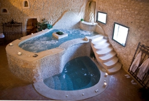
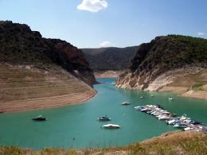

Actividades
¿Buscáis Relax?
Trabajamos con el SPA Rural Pastrana donde podrá disfrutar de todo tipos de tratamientos de relax.
Rutas a caballo
A sólo 10,8 km de los alojamientos rurales se encuentra el Club hípico y social El Ventisquero, donde podrá realizar clases o rutas a precios muy interesantes.
Actividades náuticas

Fuente: Ptomico
{kind=link}
El enclave de los apartamentos rurales Los Parajes es ideal para visitar los emblases de Entrepeñas y Buendía. El visitante puede ir al Centro Náutico Deportivos de Entrepeñas y disfrutar de la posibilidad usar barcos de vela, botes de remo, excursiones en catamaranes, itinerarios en canoa o kayac…
El blog de escapada rural publicó un artículo sobre las actividades náuticas en la provincia de Guadalajara.
Senderismo
Fuentelencina se encuentra al borde de la planicie de la meseta alcarreña. Se puede realizar una bonita ruta de senderismo, llamada Camino de la Vega, que nos va a llevar a recorrer todo el arroyo de la Vega hasta su encuentro en el arroyo del Arlés, después seguiremos camino de Alhóndiga para regresar a Fuentelencina.
Si nos gusta el senderismo hay otras rutas en la zona para disfrutar de un día al aire libre.